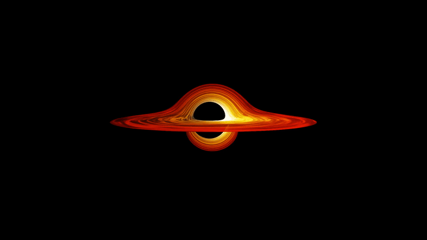
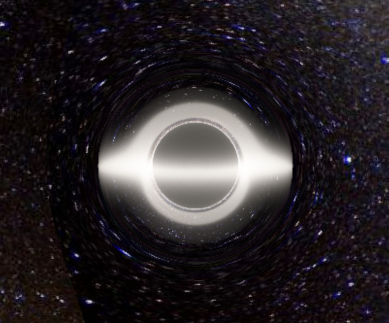
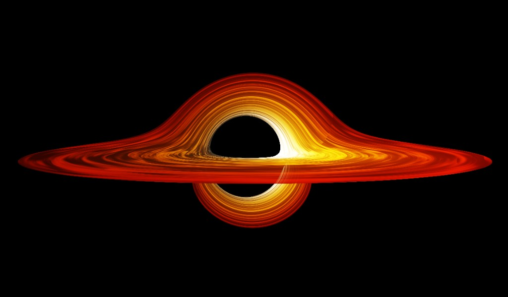

Schwarzschild black hole — photon ring & lensing

Kerr black hole — accretion disk & Doppler beaming
Black holes produce gravitational fields so intense they bend the paths of nearby light rays. According to Einstein's theory of relativity, light traveling near a black hole follows curved spacetime geodesics — the shortest possible paths through warped space.
Each pixel on the observer's screen corresponds to one light ray propagated backwards through curved spacetime using the relativistic geodesic equations. Rays are cast from the camera, bent by gravity, and traced until they either hit the accretion disk or escape to the background.
where Γᵘ_αβ are the Christoffel symbols encoding spacetime curvature,
and λ is the affine parameter along the null geodesic.
GPU parallelization via Taichi allows millions of these integrations to run simultaneously — enabling high-resolution, near-real-time rendering.
Two separate Python programs, each a complete standalone renderer targeting a different black hole geometry:
starmap.jpg. Two colored sun light sources (amber + blue-white). Anamorphic lens flares. Film grain (GRAIN_INTENSITY = 0.015). Two-bounce frame-dragging geodesic acceleration term. Interactive camera: W/S/A/D to orbit/tilt, Q/E to zoom.
Semi-analytic approximation — avoids full Christoffel symbol computation per step for GPU speed
Both render at 1280×720. Accumulative rendering (alpha = 0.12 per frame) acts as temporal anti-aliasing — images sharpen over ~30 frames rather than rendering a single noisy frame.
Derived by Karl Schwarzschild in 1915, this metric describes spacetime geometry outside a non-rotating, spherically symmetric mass. It forms the foundation of most black hole simulations.
rₛ = 2GM/c² (Schwarzschild radius)
Rays that fall inside the Schwarzschild radius are absorbed by the event horizon. Those that escape are projected back to form the visual field around the black hole.
Astrophysical black holes possess angular momentum — they spin. The Kerr metric extends Schwarzschild to rotating masses, introducing frame-dragging: the black hole literally drags spacetime around with it.
ρ² = r² + a²cos²θ
Δ = r² - rₛ·r + a²
Frame dragging (Lense-Thirring effect): off-diagonal dt·dφ term
forces particles to co-rotate within the ergosphere.
The simulation used a highly spinning Kerr black hole with spin parameter a ≈ 0.99M.